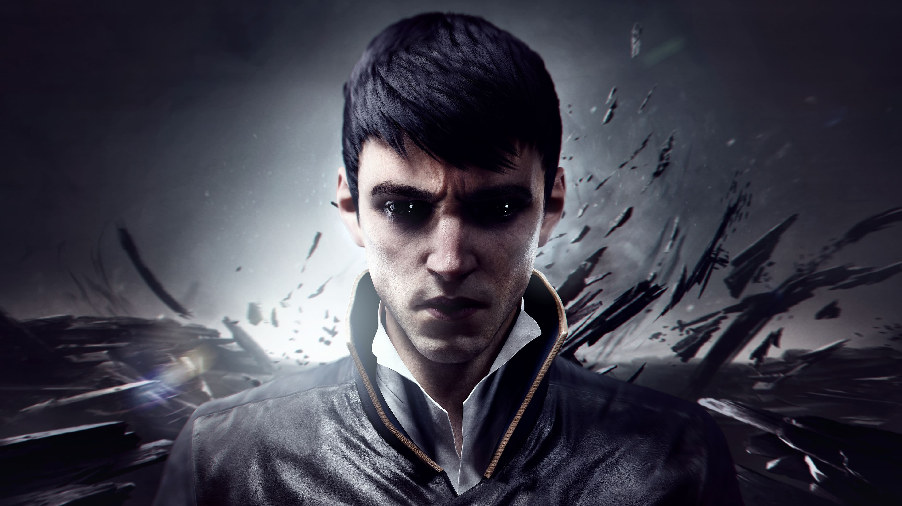
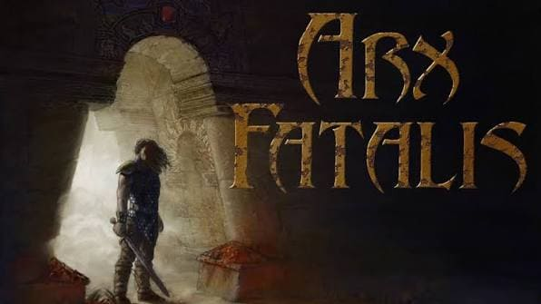
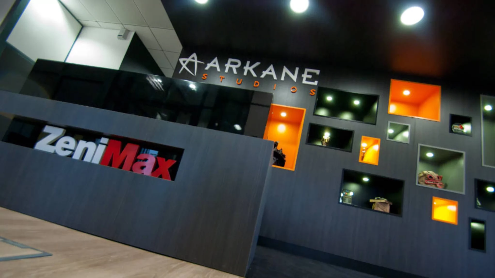
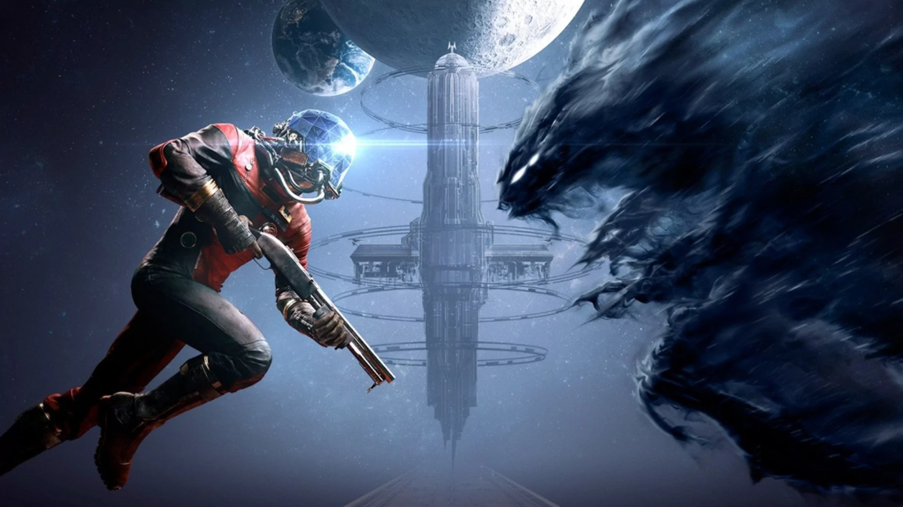
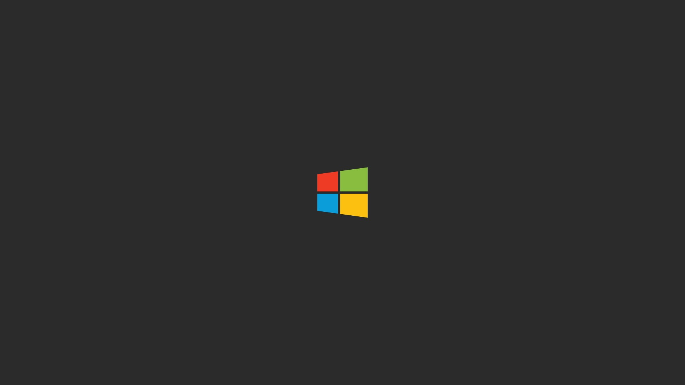

Fondé en 1999, Arkane® Studios s'est imposé comme l'une des équipes de développement les plus réputées et les plus acclamées par la critique dans l'industrie du jeu vidéo. Arkane s'est forgé une réputation en créant des jeux au style unique, à l'action immersive et à l'approche artisanale. Les titres du studio, parmi lesquels figurent Dishonored®, Dishonored 2, Prey® et DEATHLOOP™, ont remporté des centaines de distinctions prestigieuses à travers le monde, dont plusieurs prix du « Jeu de l'année ». Marvel's Blade est un jeu pour adultes, en solo et à la troisième personne, dont l'action se déroule au cœur de Paris. Il est actuellement en cours de développement chez Arkane Lyon, en collaboration avec Marvel Games.




